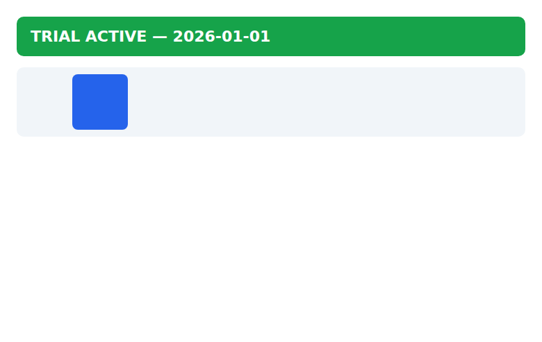
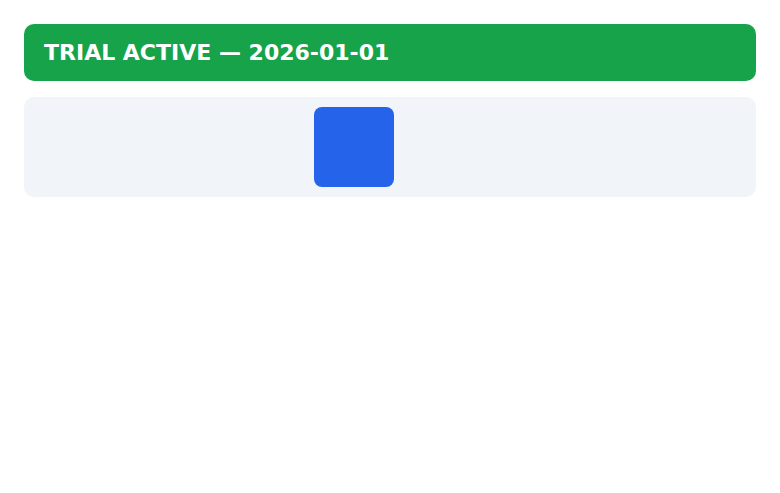
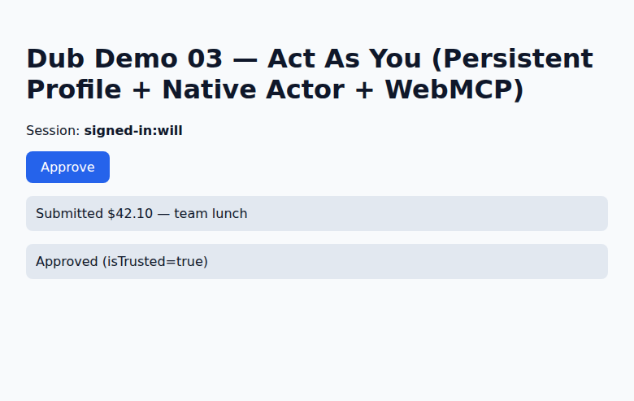

Chromium internals, exposed directly to agents.
Dub (DangerouslyUseBrowser) is a real Chromium 157 fork with native N-API bindings and an incur MCP server. It is not Playwright, not a stock-CDP wrapper, and not Electron.
Why “dangerously”: Dub runs without confirmation prompts. It defaults to a separate persistent profile and a loopback listener (127.0.0.1), but can attach to a real signed-in profile and act with that profile’s authority.
Demo
What a Chromium fork unlocks
Stock browser automation sits behind DevTools protocol ceilings. Dub patches Chromium directly at native C++ seams, so agents can control browser state that Playwright and stock CDP cannot reach cleanly.
| Capability | What Dub does | Chromium seam |
|---|---|---|
| NetworkService interception | Mock, block, redirect, and patch decoded response bodies across tabs, dedicated/shared/service workers, CacheStorage, and HTTP disk cache, plus bounded net log --follow. |
url_loader_request_interceptor.h (browser process) |
| Per-tab isolated engine clock | Freeze, jump (including 31-day advances with bounded interval fire caps), step exact animation frames, and monotonically resume Date, performance.now(), timers, rAF, and CSS animations — without disturbing other tabs sharing the same renderer. |
Per-tab V8 + Blink clock override |
| Native actor + WebMCP | Own a persistent profile (profile attach), invoke Chromium’s native actor tools (actor.click, actor.type, actor.select, actor.scroll, actor.upload_file) dispatching real isTrusted: true events, and discover/call site-registered WebMCP tools. |
chrome/browser/actor/tools + WebMCP |
Quickstart
Requires Node 22+ and a C++ toolchain for the native N-API bridge. Every dub subcommand is exposed as a typed MCP tool once the server is running; tabs, clocks, and network rules persist across calls.
1. Install Dub and fetch the Chromium fork
npm i -g dangerouslyusebrowser
dub install2. Start the browser and MCP server
dub serve --port 7777
# Serves MCP over HTTP at http://127.0.0.1:7777/mcp3. Connect your MCP client
claude mcp add --transport http dub http://127.0.0.1:7777/mcpExamples
Run these directly from the CLI or let an agent invoke the matching MCP tools against the live browser session.
1. Rewrite the network
Point a production frontend at a local fixture, hot-patch a served JS bundle across caches and Service Workers, and follow matching traffic.
dub net rewrite --match 'https://api.acme.com/v1/user' --status 200 --body ./fixtures/admin-user.json
dub net patch --match '*/static/app.*.js' --replace 'retries:0' --with 'retries:3'
dub net log --match 'api.acme.com' --follow2. Control the clock
Freeze one tab’s V8 and Blink clock, step CSS animations frame-by-frame for deterministic screenshots, and jump 31 days to test trial expiry without affecting neighboring tabs.
dub clock freeze --tab 1 --at 2026-01-01T09:00:00Z
dub clock step --tab 1 --frames 20
dub clock advance --tab 1 --by 31d
dub screenshot --tab 1 --out trial-expired.png3. Act as you
Attach to a persistent profile, discover Chromium’s native actor tools alongside page-registered WebMCP tools, and invoke both with real trusted input.
dub profile attach --name Default
dub tools list --tab 1
dub tools call --tab 1 page.submit_expense --input '{"amount":42.10,"memo":"team lunch"}'
dub tools call --tab 1 actor.click --input '{"target":"Approve"}'Verified evidence
Every screenshot below was captured directly from the compiled Linux x86-64 Dub Chromium 157.0.8082.0 binary during the 2026-11-23 launch verification run.
net rewrite · net patch · net log --follow

/v1/user rewritten to role: "admin" from a fixture file and /static/app.123.js hot-patched (retries:0 → retries:3) inside Chromium’s NetworkService.
clock freeze · clock step · clock advance --by 31d

2026-01-01T09:00:00Z.
left: 289.785px).
TRIAL EXPIRED.profile attach · tools list · WebMCP + actor.click

signed-in:will), discovered 9 tools, invoked WebMCP page.submit_expense, and clicked Approve via native actor.click (isTrusted=true).